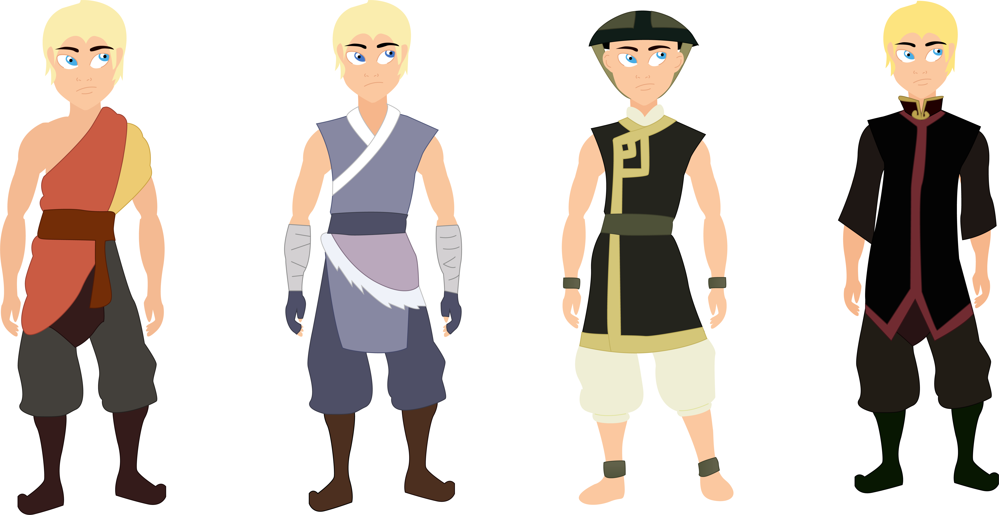
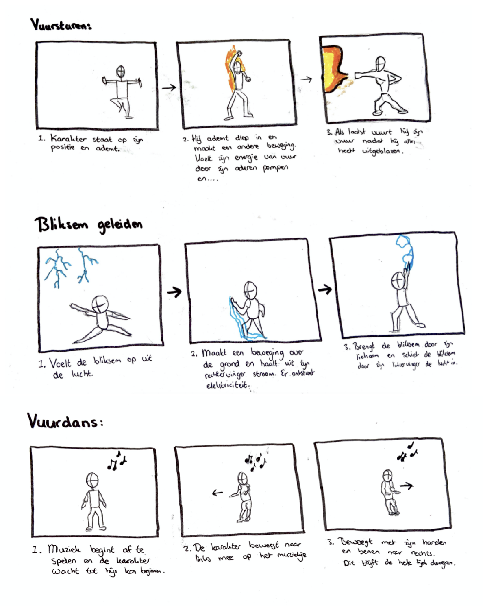

Avatar Animatie
Voor het vak Interface & Beweging kregen wij de opdracht om een eigen illustratie te ontwerpen en animeren. We mochten zelf kiezen wat we wilden illustreren een daarom had ik gekozen om mezelf te ontwerpen uit de serie van Avatar. Ik heb hiervoor gekozen, omdat dit mijn favoriete serie is en vond het een leuke uitdaging om met deze karakter iets te animeren.
Dit was ook een erg leuke uitdaging, omdat in de serie van Avatar hebben allerlei verschillende karakters krachten. Deze krachten bestaan uit 4 verschillende elementen die bepaalde karakters kunnen beoefenen. Deze elementen zijn; water, aarde, vuur en wind. Nu wilde ik mijn karakter deze krachten ook laten gebruiken en dat laten zien in mijn animatie.

Gekozen karakter
Uiteindelijk heb ik ervoor gekozen om de vuurmeester te kiezen. Ik heb hiervoor gekozen, omdat vuur staat voor de periode van de zomer waarin ik ben geboren. Daarnaast is mijn lievelingskleur rood en trekt het uiterlijk van de karakter mij ook heel erg aan.
Daarentegen staan de vuurheren als heet hoofd types. Dit past dan niet echt heel erg bij mijn karakter, maar ik vind dit karakter er gewoon heel stoer uit zien.

Ontwerp keuze
Ik heb ervoor gekozen om het woord 'Firelord' op de achtergrond neer te zetten. Dit heb ik gedaan in het Chinees, omdat dit het meest overeenkomt met de stijl uit de serie van 'the last avatar'.
Uiteindelijk is het wel gemaakt in mijn eigen stijl en met andere kleuren. Alleen wil ik de gebruikers bewust maken van het feit dat het lijkt alsof mijn karakter ook in de serie speelt.